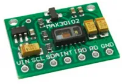
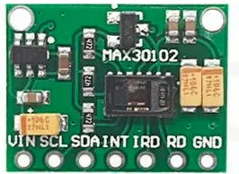
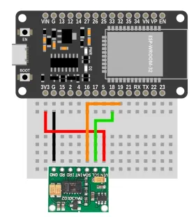
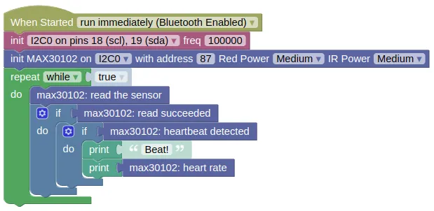

Heart Rate Sensor (MAX30102)

The MAX30102 is an integrated pulse oximetry and heart-rate monitor module. This extension allows you to detect heart beats, read heart rate (bpm), and get the raw readings (IR and Red).
Pins

| Pin | Description |
|---|---|
| VIN | Power for the sensor. Connect to 3V3. |
| GND | Ground pin. This should be connected to the GND pin on the ESP32. |
| SCL | Serial Clock. This is used to communicate with the ESP32 using the I2C protocol (default pin 18). |
| SDA | Serial Data. This is used to communicate with the ESP32 using the I2C protocol (default pin 19). |
| INT / IRQ / RD | Not in use. Leave unconnected. |
Wiring

Code
This code will print the measured heartrate everytime it detects a pulse.
Blocks

Python
import machine
import max30102
i2c0 = machine.I2C(0, freq=100000)
max30102_device = max30102.MAX30102(i2c0, addr=87, red_led=0x7F, ir_led=0x7F)
while True:
max30102_device.read()
if max30102_device.read_succeeded:
if max30102_device.get_beat():
print('Beat!')
print(max30102_device.get_bpm())
Results
Place your finger lightly on the sensor. You should see the word 'Beat!' and the measured heartrate printed in the monitor everytime a pulse is detected.
It can take a 2 to 3 seconds before it starts detecting pulses, and a few seconds more before the heartrate stabilize.
class MAX30102 - control MAX30102 pulse oximeter and heartrate monitor
Constructors
max30102.MAX30102(i2c, addr=87, red_led=0x7F, ir_led=0x7F, buf_len=100)
Creates an MAX30102 object.
The arguments are:
-
i2cAn i2c object. -
addrThe i2c address of the MAX30102. By default, this should be 87. -
red_ledAn integer (0 to 255) specifying the brightness of the red LED. The default is usually ok, but you may want to adjust this if you can't get a good reading. The red LED is used for both heartrate and SpO2. -
ir_ledAn integer (0 to 255) specifying the brightness of the IR LED. The default is usually ok, but you may want to adjust this if you can't get a good reading. The IR led is only used for SpO2. -
buf_lenAn integer specifying the amount of readings to buffer. The default is usually fine.
Returns a MAX30102 object.
Methods
MAX30102.read()
Performs a reading of the red and IR reflected light value, check for heartbeat, and update the heartrate.
You need to run this frequently for the sensor to work.
Returns True if the read succeeded, and False if there are no new data to read.
MAX30102.get_red()
Gets the red reflected light value.
You must perform a read() first.
Returns an integer (−8,388,608 to 8,388,607) representing the red reflected light value.
MAX30102.get_ir()
Gets the IR reflected light value.
You must perform a read() first.
Returns an integer (−8,388,608 to 8,388,607) representing the IR reflected light value.
MAX30102.get_beat()
Returns True if a heartbeat was detected in the last read().
MAX30102.get_bpm()
Returns a float representing the heartrate in beats per minute.
MAX30102.get_spo2()
Calculate the oxygen saturation level.
Returns a float representing the oxygen saturation (SpO2) in percentage.
MAX30102.get_temperature()
Get the sensor's internal temperature.
Returns a float representing the temperature in Celsius.
Properties
MAX30102.read_succeeded
A boolean indicating if the last read was successful.